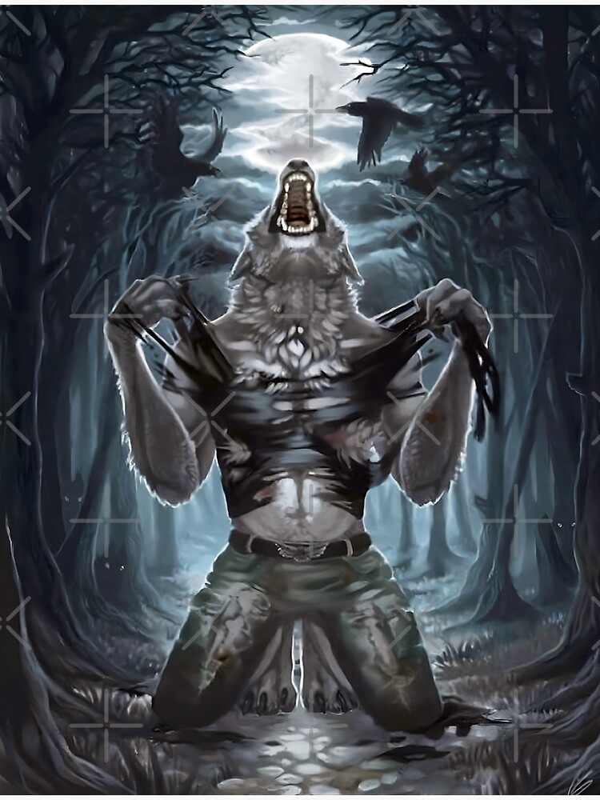

I am deeply amused by the amount of time passed. Ah yes, feels just like S1...Ah...Good times indeed...
Heres a list. Me and Rishis most best and fun times...Ah...How much i miss you...Oh little fish...fish...
Once a time, the funnyness got to me, i asked the poor fish a question, "My dear fello, what is the halfness of 10?" And how deeply sorry i felt when she uttered the words "20"...You will be missed rishi...
Another time, the funnyness in me as well did the most epic time ever-Forture Telling-Ah yes, how funny times... Since im so funny i preformed some of the best forture telling ever Sheldon from Young Sheldon would be gobsmacked by my epic skills.
I asked the little fish fish, "Someone you know will tell you something that you would be blown away. After school, i messged her on whatsapp like the old little woman we were, telling her that... (Look below peasent)
That someone in her class (Which the name of the little fello i will not be sharing because he was mean to me once and doesnt derserve me outing his name) had a crush of her and took my phone to tell her that.
The little fish told me she started laughing very deeply. I bet Young Sheldon loves my story deeply. Sheldon Lee Cooper you dog 😈
